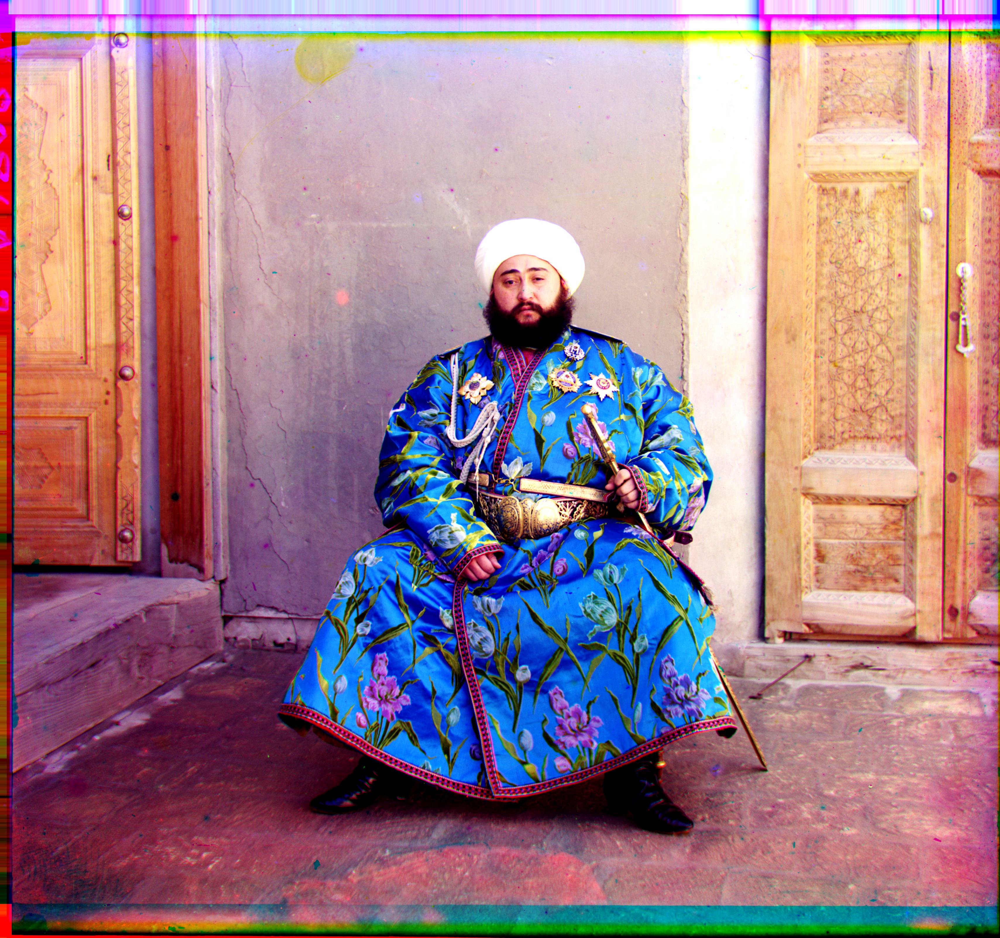
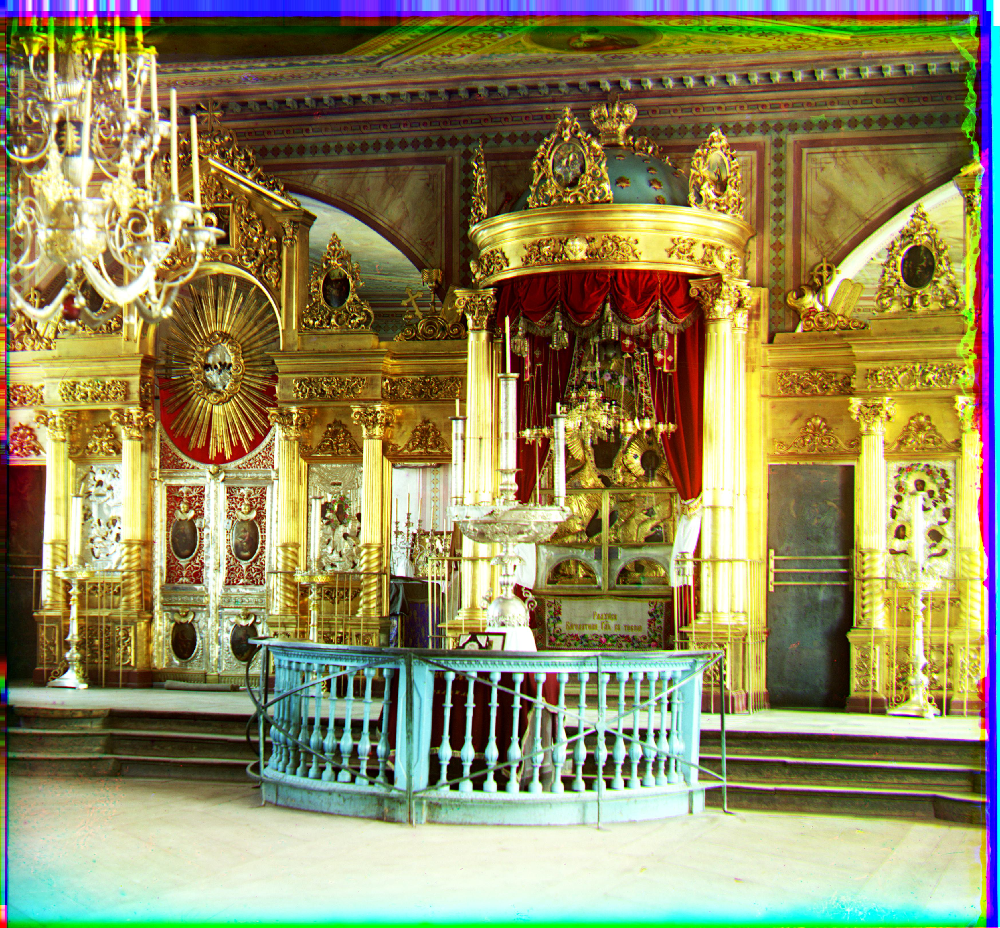
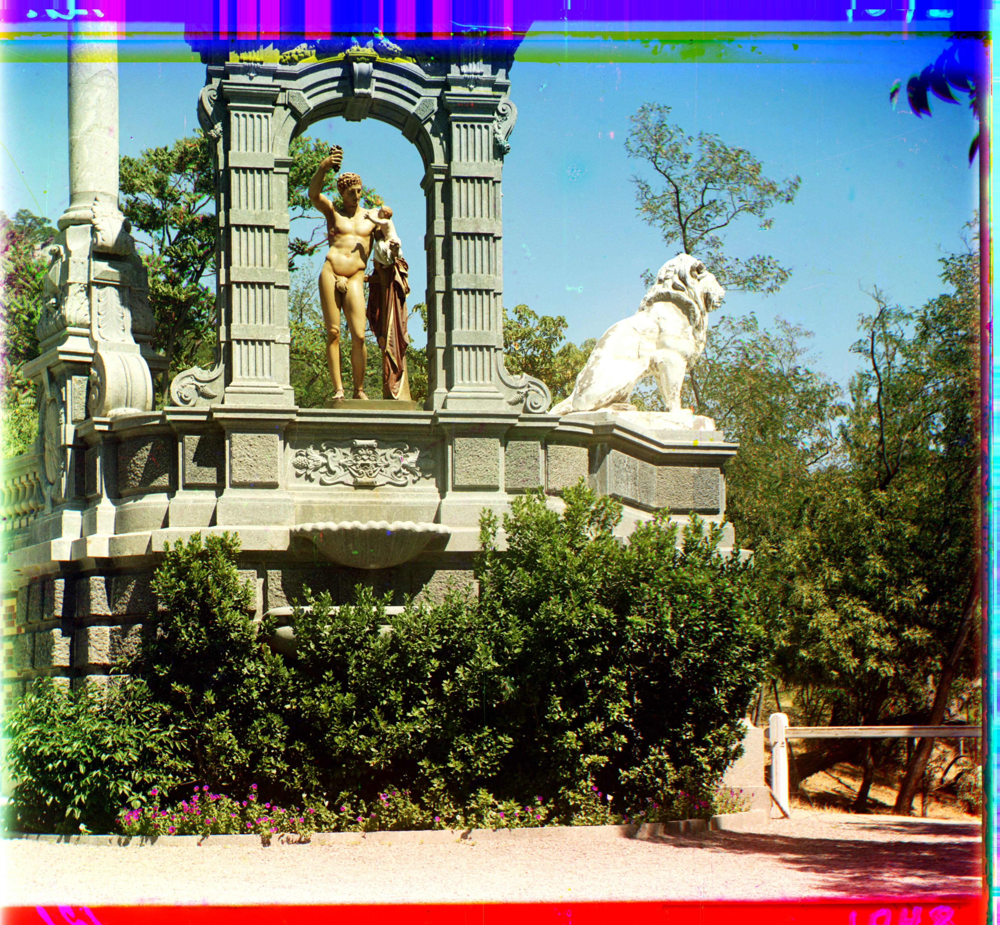
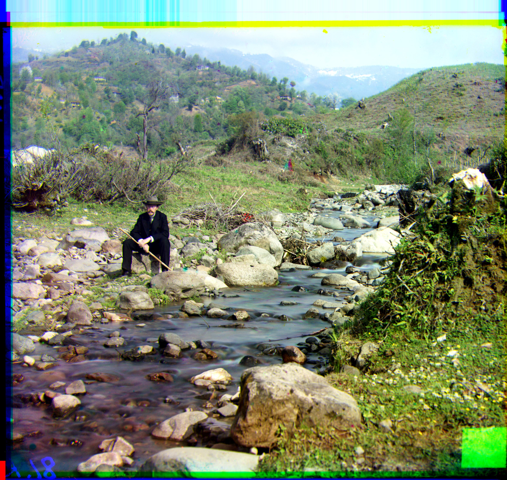

IMAGES OF THE RUSSIAN EMPIRE:
Colorizing the Prokudin-Gorskii photo collection
Quang Nguyen, SID: 3036566521
1. Project Overview
This project aims to take the digitized Prokudin-Gorskii glass plate images, which include three similar images of different shades (since each of them was exposed to a different color filter) vertically stacked on top of one another, and output a single RGB color image using various image processing techniques. Here are examples of input images:


2. Single-scale Alignment
For the small images, i.e. the ones that end with .jpg, I implemented an exhaustive search algorithm that loop over a window of possible displacements (I did ±5% of the image width and height) and computed the displacement with the highest Normalized Cross-Correlation (NCC). For displacing the image, I implemented a custom function that uses np.roll to shift the image and then fill the rolled-over pixels with the values of the closest existing pixels. Since I noticed that each of the image will have some sort of black border, I also cropped 10% of the image width and height (i.e. 5% from each edge) for better alignment. Here are my aligned images with their displacements:
Green: (5, 2); Red: (12, 3)
Cathedral
Green: (-3, 2); Red: (3, 2)
Monastery
Green: (3, 3); Red: (6, 3)
Tobolsk
3. Multi-scale Alignment
3.1. Vanilla Implementation (Image Pyramid with Constant Cropping)
For larger images, i.e. the ones that end with .tif, the exhaustive search algorithm was simply insufficient and too expensive because of the high resolution of the images. Consequently, I implemented an image pyramid of 5 levels with the highest level being the full size image and downsampled by a factor of 2 for each subsequent level. Starting at the smallest image, I did the exhaustive search over the window of \([-15, 15]\) pixels to obtain the optimal displacement. Upon moving to the next level, the image size will double and I will also double the said displacement to ensure consistency. I will then search ±3 pixels around this displacement for the current higher resolution. This process repeats until an optimal displacement is derived for the original image. Here are my aligned images with their displacements:
Green: (25, -11); Red: (58, -5)
Church
Green: (49, 24); Red: (104, 56)
Emir
Green: (60, 16); Red: (124, 14)
Harvesters
Green: (40, 17); Red: (89, 23)
Icon
Green: (55, 8); Red: (118, 12)
Lady
Green: (82, 10); Red: (178, 12)
Melons
Green: (51, 26); Red: (108, 36)
Onion Church
Green: (33, -11); Red: (140, -26)
Sculpture
Green: (79, 29); Red: (176, 36)
Self-portrait
Green: (54, 13); Red: (112, 10)
Three Generations
Green: (42, 6); Red: (87, 32)
Train
3.2. Automatic Cropping
The next bell and whistle that I implemented is Automatic Cropping. I noticed that for edges that are either black or white, the average pixel value will be either extremely high or extremely low (converging towards 0 or 1). Thus, I loop through every row and column that is at most 10% from the edges and for each of them, I calculate the average pixel value and crop any row/column whose pixel value is outside of the range \([0.1, 0.9]\).
This implementation performs on par with constant cropping on the majority of the images. However, for images where the different channels are more significantly misaligned, my implementation performs worse because the misalignment will cause the average pixel value to be more moderate and more misinformed rows and columns are not cropped (this is evident in the larger size of the final result). Here are some images for comparison:
Constant Cropping of onion_church

Automatic Cropping of onion_church
Constant Cropping of lady
Automatic Cropping of lady
3.3. Automatic Color Balancing
An additional bell and whistle that I implemted is Color Balancing. The method that I wrote is from Limare et. al in 2011 and it outlines as followed. First, I flatten the image and sort all the pixel values. Then, I define \(V_{min}, V_{max}\) to be the pixel values at the 5% and 95% percentile. For any pixel whose value is lower than \(V_{min}\) or higher than \(V_{max}\), I will set their value to be equal to \(V_{min}\) and \(V_{max}\). Finally, I will normalize the transformed image such that the pixel values range from 0 to 1.
This implementation improves the quality of images whose scene or object has higher exposure to natural light as it helps the object stands out more from the background. Here are some examples:
Vanilla of three_generations
Color Balancing of three_generations
Vanilla of self_portrait
Color Balancing of self_portrait
3.4. Automatic Contrasting - Histogram Equalization
The next bell and whistle that I implemented is Automatic Contrasting, which I accomplished by using skimage.exposure.equalize_hist. This improves the quality of some images since it balances the light intensity and contrast of the objects in the images. Here are some examples that show improvement:
Vanilla of harvesters
Histogram Equalization of harvesters
Vanilla of lady
Histogram Equalization of lady
3.5. Sobel Edge Detection
Another bell and whistle that I implemented is Sobel Edge Detection. I noticed that for images where the channels have vastly different brightness (i.e. the RGB values don't align well for a single pixel), vanilla alignment with NCC doesn't work well because the displacement with the highest NCC need not be optimal. As a result, I used to skimage.filters.sobel to detect the edges in the images before aligning them with image pyramid. Here are images that improve thanks to Sobel edge detection:
Vanilla of emir
Sobel Edge Detection of emir
Vanilla of church
Sobel Edge Detection of church
4. Final Result
For the final colored images, I first automatically crop the channels, preprocess them with Sobel Edge Detection, align them with an image pyramid, and apply automatic color balancing on the optimal alignment. Here are the colored images with their displacements:
Green: (25, -2); Red: (58, -14)

Church
Green: (49, 24); Red: (107, 40)
Emir
Green: (60, 17); Red: (123, 13)
Harvesters
Green: (40, 16); Red: (91, 23)
Icon
Green: (59, -9); Red: (130, -19)
Lady
Green: (78, 5); Red: (176, 10)
Melons
Green: (52, 24); Red: (107, 35)
Onion Church
Green: (33, -11); Red: (140, -26)
Sculpture
Green: (79, 30); Red: (176, 37)
Self-portrait
Green: (54, 12); Red: (112, 9)
Three Generations
Green: (41, 1); Red: (85, 29)
Train